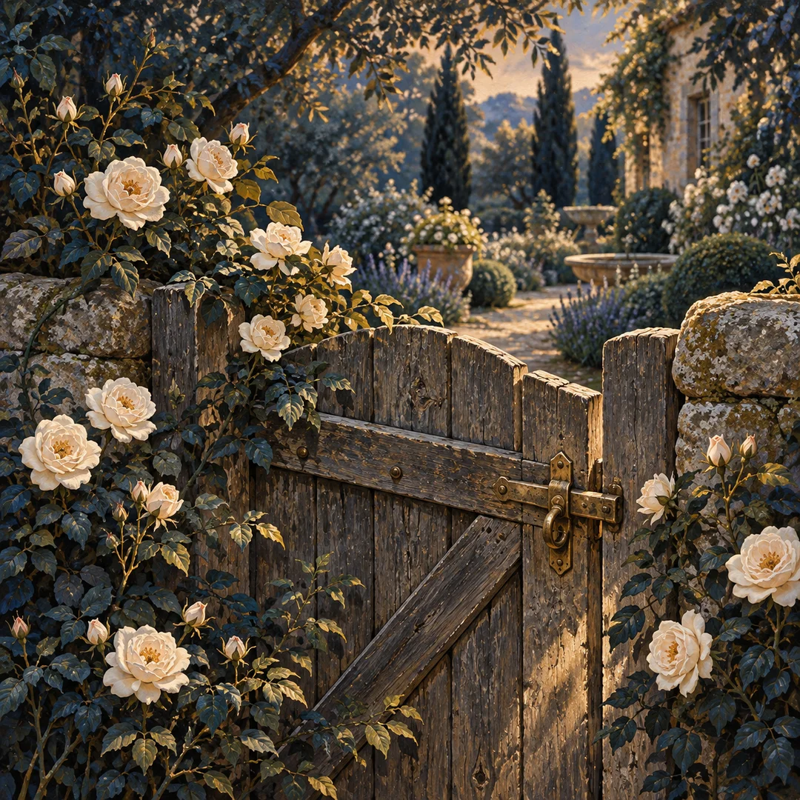
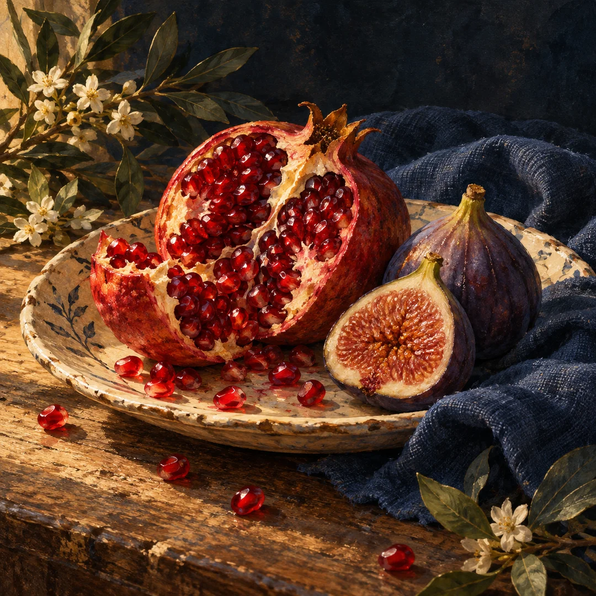

Čerstvé
vhledy
Mystický Blog
Ponořte se do hlubin tajných nauk. Články, návody a postřehy ze světa hvězd a karet.
Nejnovější články

Minulý život: 7 znamení, že si neseš vzpomínky duše
Strach, který nemá původ v tomhle životě. Místa, která znáš, ačkoli jsi tam nikdy nebyl. Talent, který tě nikdo neučil. Sedm znamení, že si duše nese vzpomínky — a jak s nimi pracovat.
Silové zvíře: Jak najít svého duchovního průvodce
Silové zvíře tě podle šamanské tradice provází celý život — v instinktech, snech i setkáních. Pět cest, jak svého průvodce rozpoznat, významy nejčastějších zvířat a práce s nimi v běžném dni.

Blázen v tarotu: význam, nový začátek a modelová situace
Co může karta Blázen otevřít v lásce, práci i při rozhodování? Praktický průvodce významem, obrácenou polohou a souvislostmi bez předpovědí.

Andělské číslo 222: Co znamená, když ho vidíš všude
Vidíš 222 na hodinách, účtenkách i značkách? Andělské číslo 222 nese poselství rovnováhy, trpělivosti a důvěry v proces. Co znamená v lásce, práci i na duchovní cestě — a 5 věcí, které udělat.

Letní láska podle hvězd: Proč hoří rychle a jak poznat, že vydrží
Letní lásky hoří jasněji než kterékoli jiné — a v září často zhasnou. Zjisti, proč léto romantice astrologicky přeje, která znamení teď přitahují nejvíc a podle čeho poznáš, že tvoje letní láska přežije podzim.

Lví sezóna 2026: Měsíc odvahy, který letos korunuje zatmění
Od 23. července vládne obloze Lev — sezóna odvahy, tvořivosti a viditelnosti. Letos ji navíc korunuje zatmění Slunce přímo ve Lvu. Zjisti, co přinese tvému znamení a jak ji využít čtyřmi lvími rituály.

Karta Milenci (VI) v tarotu: Význam v lásce, práci i obrácená
Milenci nejsou jen karta lásky — jsou to karta volby. Co znamená šestá velká arkána ve výkladu na lásku, práci, jako karta dne i v obrácené poloze — a proč se jí říká křižovatka srdce.